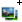
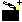
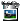

2. Getting started
Once you have installed Stopmotion you can start it by typing stopmotion in a console or from menues:
In the KDE menues you can Stopmotion it by going to ->->
In the Debian menues Stopmotion lies under ->->
When the program is started you will se the following:
To the top you have the Framebar where you will see all the pictures in the animation. The center area is the Frameview where you will get a closer look at your pictures, see the webcamera and preview your animation.
The left area is the tools menu. On the top of this menu you have buttons for adding
pictures from the harddrive

, adding new scenes

as well as deleting frames and scenes

 .
You can also start the webcamera with the camera button
.
You can also start the webcamera with the camera button
 .
.